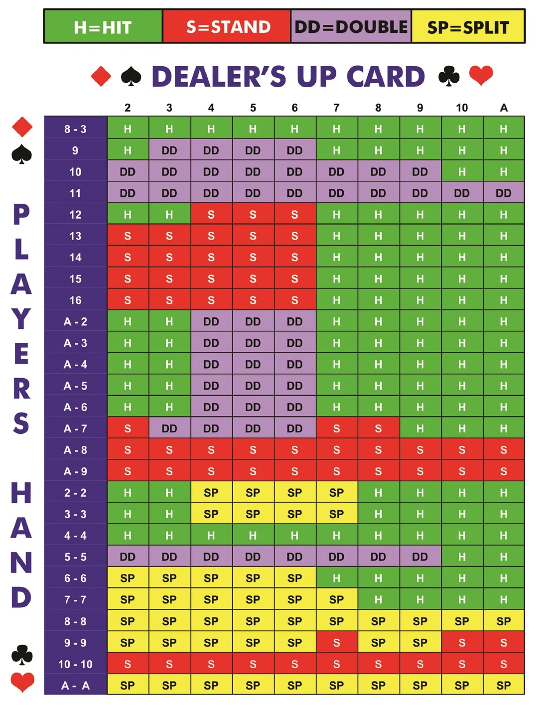

| BLACKJACK | Quick Reference Rules |
|---|---|
| THE GOAL | Beat the dealer by getting a hand value closer to 21 than theirs. Exceeding 21 is a "bust" and results in an automatic loss. |
| CARD VALUES | 2 through 10: Face value (worth their exact number). Face Cards (J, Q, K): Worth 10 points each. Ace: Worth 1 or 11 points (whichever benefits your hand more). |
| GAMEPLAY | Players place their wagers before cards are dealt. Players receive 2 face-up cards. Dealer gets 1 face-up and 1 face-down. A "Natural Blackjack" (Ace + 10-value card on the first two cards) wins immediately unless the dealer also has blackjack. |
| PLAYER OPTIONS | Hit: Take another card to improve your hand total. Stand: Keep your current total and end your turn. Double Down: Double your original bet in exchange for exactly one card. Split: Separate two equal-value cards into two individual hands by placing a matching second wager. |
| DEALER RULES | The dealer must hit until their cards total 17 or higher. Once they reach 17+, the dealer must stand. |
